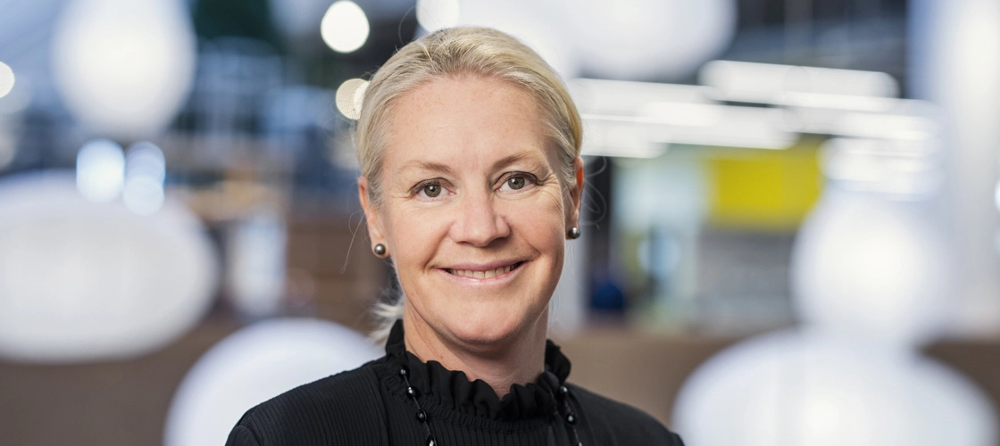

Speakers
-

Ellen MacArthur
Dame Ellen MacArthur has enjoyed a successful career, having earned the title of the fastest solo sailor to sail around the world. In 2010, Ellen launched the Ellen MacArthur Foundation, a charity organisation committed to accelerating the evolution to a circular economy.
-

Pia Heidenmark Cook
A people and planet-centric businesswoman, Pia Heidenmark Cook has enjoyed a decorated career in the sustainability sector - best known for her former roles as the Global Head of Sustainability and the Chief Sustainability Officer of IKEA.
-

Nigel Topping
Appointed as the UN Climate Change High-Level Champion for COP26, Nigel Topping is one of the frontrunners in the mission to achieve halved emissions by the year 2030. Nigel is a passionate advocate for the adoption of a circular economy and the transition to net zero.
-

Kate Brandt
Working as the Chief Sustainability Officer of Google, Kate Brandt is a global advocate for sustainability, who has also formerly worked as the Special Advisor for Energy to the Secretary of the Navy and as the Federal Chief Sustainability Officer for the White House.
-

Sally Uren
Sally Uren, a global expert on sustainable development, has spent the past two decades developing and delivering sustainability strategies. Renowned for her role as the CEO of Forum for the Future, Sally is on a mission to accelerate progress toward a sustainable future.
-
Steve Howard
Co-Founder of the We Mean Business Coalition, Steve Howard has also formerly worked as the Chief Sustainability Officer of the IKEA Group and as the Co-Chair of the Environment and Natural Resource Global Future Council for the World Economic Forum.
-

Jeremy Schwartz
As a preeminent authority on sustainability, Jeremy is the CEO of The Body Shop and Chairman of Sustainability Transformation for Kantar. With experience in setting and stretching environmental goals, Jeremy has also been the host of the Saving Tomorrows Podcast.
-
Mike Barry
Mike helped to develop and implement the ground-breaking Plan A sustainability initiative. Thus he claimed the Sustainable Business Innovator of the Year award by the Guardian Group, a testament to his expertise on sustainability, climate change and circular economy.
-

Michael Pawlyn
Founding Director of Exploration Architecture Limited, Michael is famed for his work on various sustainable biomimetic architecture projects - such as The Eden Project, Las Palmas Water, the North Wales Tidal Energy Project, the Sahara Forest Project and The EcoRainforest.
-

Peggy Liu
Chairperson of the Joint US China Collaboration on Clean Energy, Peggy is catalysing societal change and eco-city development with her previous experience as an Energy Advisor to the Clinton Global Initiative.